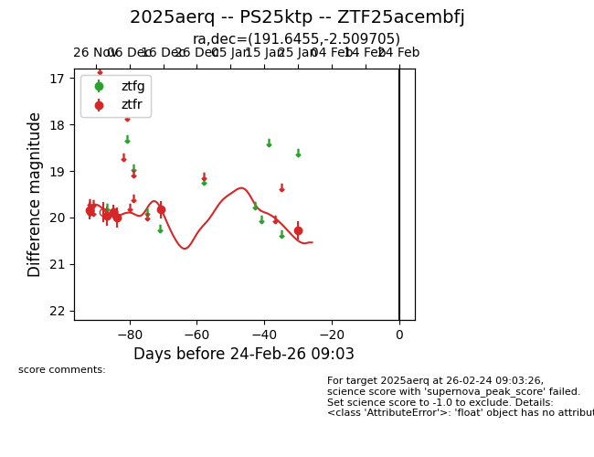
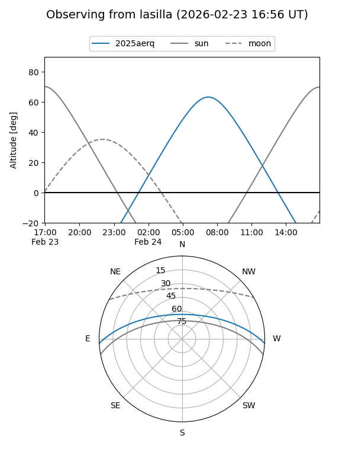
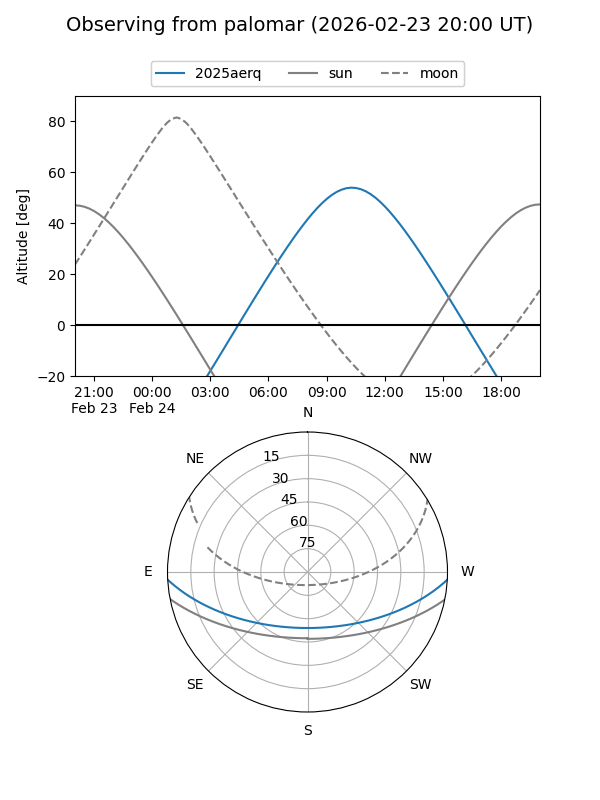
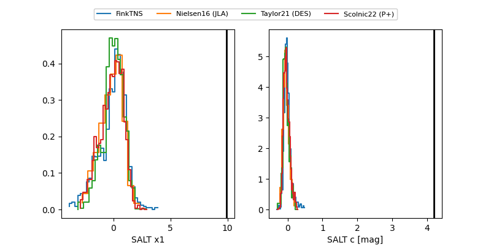

2025aerq
Target 2025aerq at 2025-12-31 17:59
Aliases and brokers:
FINK: link
Lasair: link
ALeRCE: link
TNS: link
YSE: link
alt names
ZTF25acembfj (ztf,fink_ztf)
2025aerq (tns,yse)
PS25ktp (panstarrs)
Coordinates:
equatorial (ra, dec) = 191.6455,-2.50971
equatorial (HMS+DMS) = 12:46:34.93,-02:30:34.94
galactic (l, b) = (300.4807,+60.33893)
Flags:
Photometry:
last ztfr=19.83
5 ztfr detections
Lightcurve

Visibility


Additional plots
